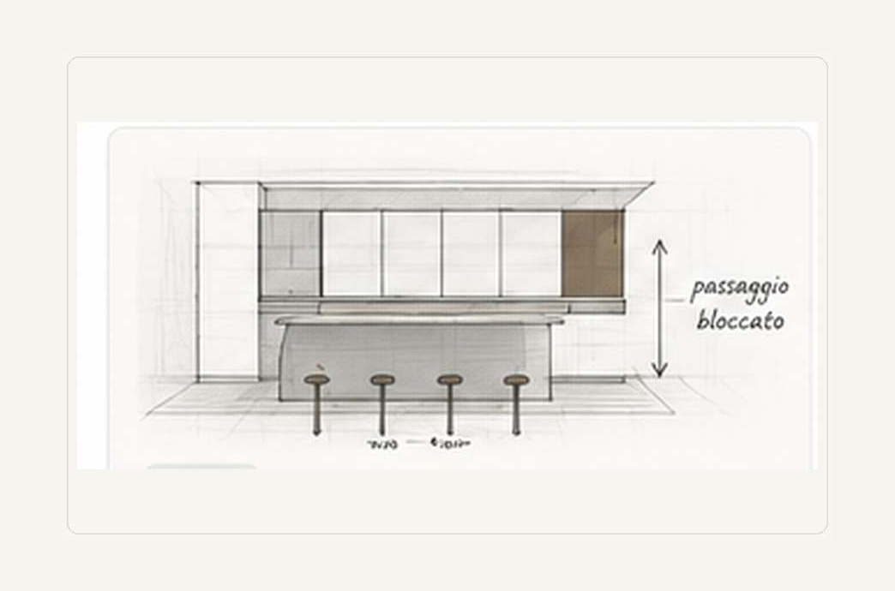
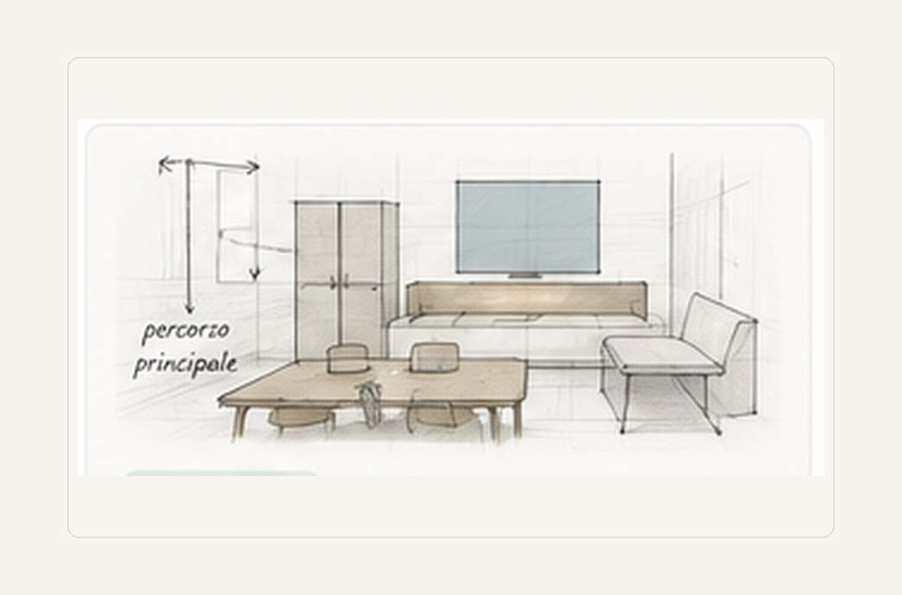
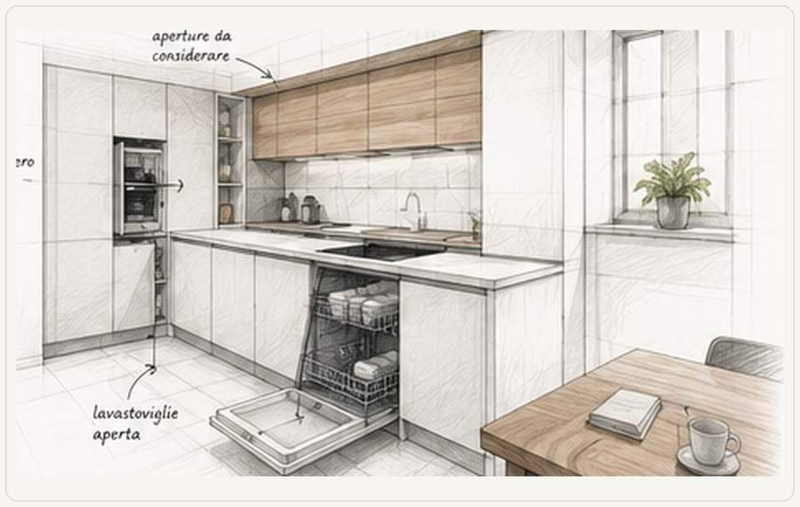
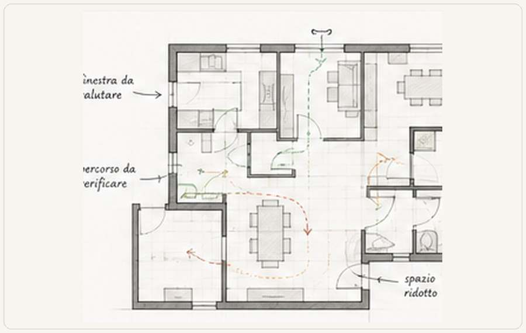

Cucina
Lavastoviglie aperta e passaggio bloccato.
Il corridoio sembra sufficiente finché lo sportello non viene aperto.
Leggi il caso →Casi analizzati
Casi anonimizzati e semplificati, con una criticità precisa, una conseguenza concreta e i limiti dichiarati.

Raccolta
Il corridoio sembra sufficiente finché lo sportello non viene aperto.
Leggi il caso →
Separare l'ingresso può migliorare la privacy e togliere spazio al soggiorno.
Leggi il caso →
Materiali, codici, accessori e lavorazioni devono essere chiariti.
Leggi il caso →
Lo spazio va verificato con persone sedute e moduli aperti.
Leggi il caso →
Impianti, accessi e qualità degli ambienti vanno letti insieme.
Leggi il caso →
La disposizione va verificata insieme a percorsi e luce.
Leggi il caso →
Davanzale, piano, miscelatore e infisso devono essere compatibili.
Leggi il caso →
Aperture, cucina e forma residua decidono se la casa continua a funzionare.
Leggi il caso →Il contenimento e lo spazio davanti devono essere letti come due esigenze distinte.
Leggi il caso →
La finitura può nascondere ciò che deve restare accessibile e richiedere l’apertura della nuova finitura.
Leggi il caso →Privacy e limiti
Quando mancano misure, documenti o verifiche tecniche complete, il limite viene dichiarato.
Portale pubblico
Descrivi cosa devi decidere e allega il materiale nel portale pubblico.